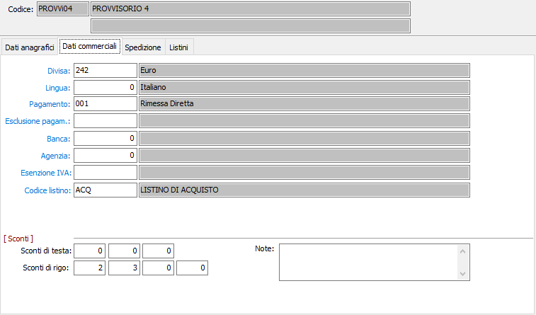

Dati commerciali

DIVISA: codice alfanumerico di 3 caratteri presente in tabella Divise per indicare la divisa con la quale viene trattato il fornitore provvisorio. Viene proposto automaticamente in fase di emissione documenti. Sul campo sono attive le funzioni di ricerca (F9) e manutenzione (CTRL+W) sulla tabella stessa.
LINGUA: codice numerico di un carattere, presente nella tabella Lingue, per definire la lingua da utilizzare nei documenti prodotti per il fornitore provvisorio. Sul campo sono attive le funzioni di ricerca (F9) e manutenzione (CTRL+W) sulla tabella stessa.
PAGAMENTO: inserire il codice del pagamento utilizzato dal fornitore provvisorio, che verrà proposto automaticamente in fase di emissione documenti. Sul campo sono attive le funzioni di ricerca (F9) e manutenzione (CTRL+W) sulla tabella stessa.
ESCLUSIONE PAGAMENTO: inserire, se necessario, il codice del tipo di esclusione accordata per i pagamenti al fornitore provvisorio. Sul campo sono attive le funzioni di ricerca (F9) e manutenzione (CTRL+W) sulla tabella stessa.
BANCA: inserire il codice della banca di appoggio del fornitore provvisorio. Tale codice verrà proposto automaticamente in fase di emissione documenti. Sul campo sono attive le funzioni di ricerca (F9) e manutenzione (CTRL+W) sulla tabella stessa.
AGENZIA: inserire il codice dell'agenzia della banca di appoggio del fornitore provvisorio. Tale codice verrà proposto automaticamente in fase di emissione documenti. Sul campo sono attive le funzioni di ricerca (F9) e manutenzione (CTRL+W) sulla tabella stessa.
ESENZIONE IVA: se il fornitore dispone di un qualsiasi titolo di esenzione Iva, inserire il codice Iva relativo al titolo di esenzione. Sul campo sono attive le funzioni di ricerca (F9) e manutenzione (CTRL+W) sulla tabella stessa.
CODICE LISTINO: inserire l'eventuale codice del listino del fornitore provvisorio. Tale codice verrà proposto automaticamente in fase di emissione richieste di offerta. Sul campo sono attive le funzioni di ricerca (F9) e manutenzione (CTRL+W) sulla tabella stessa.
SCONTI DI TESTA: in base a quanto inserito in configurazione, possono comparire fino a 5 sconti. Inserire tali percentuali di sconto/maggiorazione in questi campi. Il segno è determinato da quello che si è inserito in configurazione sul campo "tipo trattamento sconti".
SCONTI DI RIGO: in base a quanto inserito in configurazione, possono comparire fino a 5 sconti. Inserire tali percentuali di sconto/maggiorazione in questi campi. Il segno è determinato da quello che si è inserito in configurazione sul campo "tipo trattamento sconti".
NOTE: campo note per descrivere annotazioni di tipo commerciale.